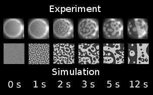
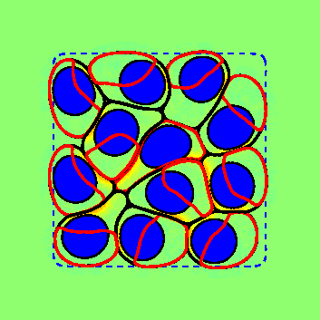
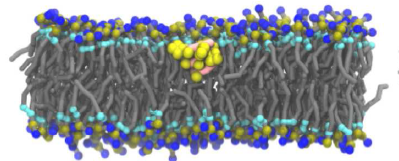
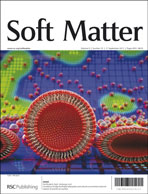
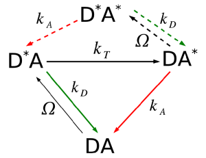

Physics of Cell Motility, Sensing, and Mechanics

Publications, Notes, and Errata
Web interface for finite size corrections in membrane MD
Mathematical Contest in Modeling
Collaborators:
Camley Group March Meeting 2022.
Camley Group (April 2019).
The Camley Group is part of the Physics & Astronomy and Biophysics Departments at Johns Hopkins University. We use theoretical and computational approaches to study cell motility, collective motion, chemotaxis and cell sensing behaviors, and the mechanics of soft matter in cell biology.
Join us - we are recruiting one or more postdocs!
Some problems we've worked on in the past are listed below, starting with one that incorporates sensing, collective cell motion, and the mechanics and rheology of soft matter:
 | Fundamental bounds limiting collective chemotaxisCells cooperate to sense the direction of a chemical gradient by communicating with each other, which may be important when clumps of cancer cells metastasize. Because each cell is distinct, these clumps are biased toward cells that are "loud" - sending inappropriately large signals. Cell clusters can reduce this bias by rearranging themselves so loud cells change their locations (video at left). This means the mechanical dynamics of the cluster matter - fluid, squishy clumps of cells with smaller relaxation time τr are better at sensing than solid ones. |
|  |

|
|  |

|
|   |